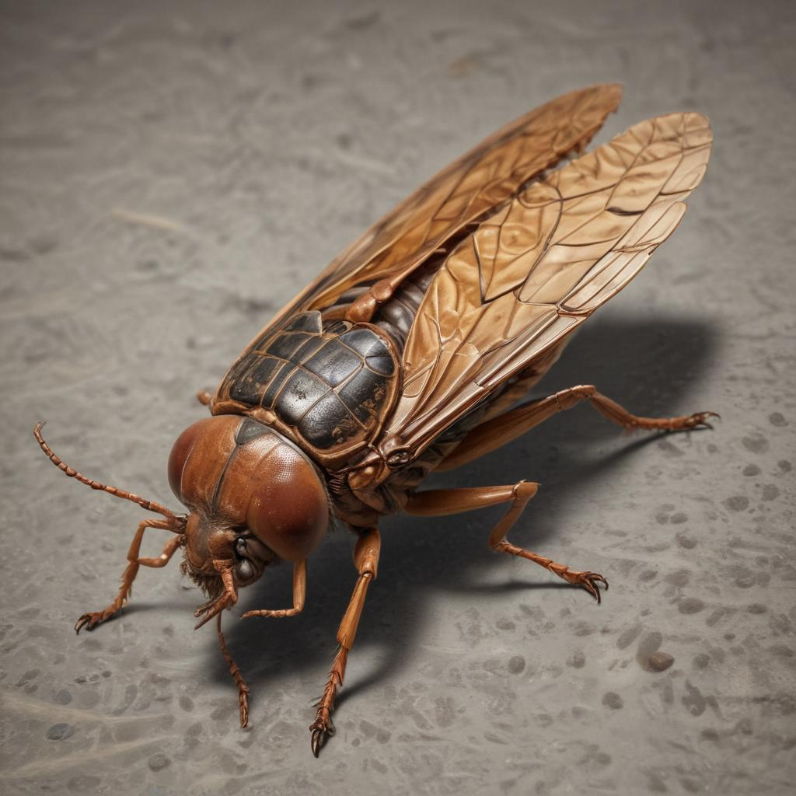

메뚜기류는 긴 다리로 멀리 뛰어다니는 곤충들이에요. 메뚜기와 귀뚜라미가 대표적인 곤충이에요. 이 곤충들은 특별한 방법으로 소리를 내어 의사소통을 해요.
긴 다리로 멀리 뛰어다니는 메뚜기는 풀밭에서 살며 풀을 먹고 자라요.
가을밤을 대표하는 곤충으로, 수컷이 앞날개를 비벼서 '귀뚜르 귀뚜르' 소리를 내요.

여름에 큰 소리를 내는 베짱이는 나무 위에서 살아요.